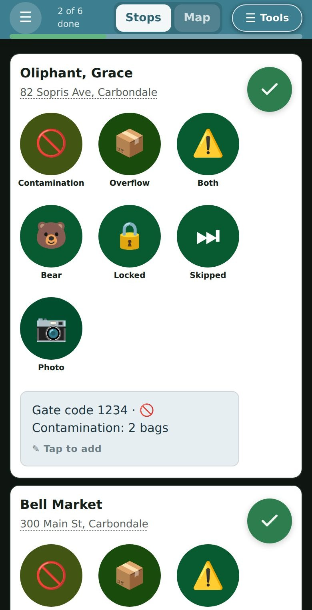
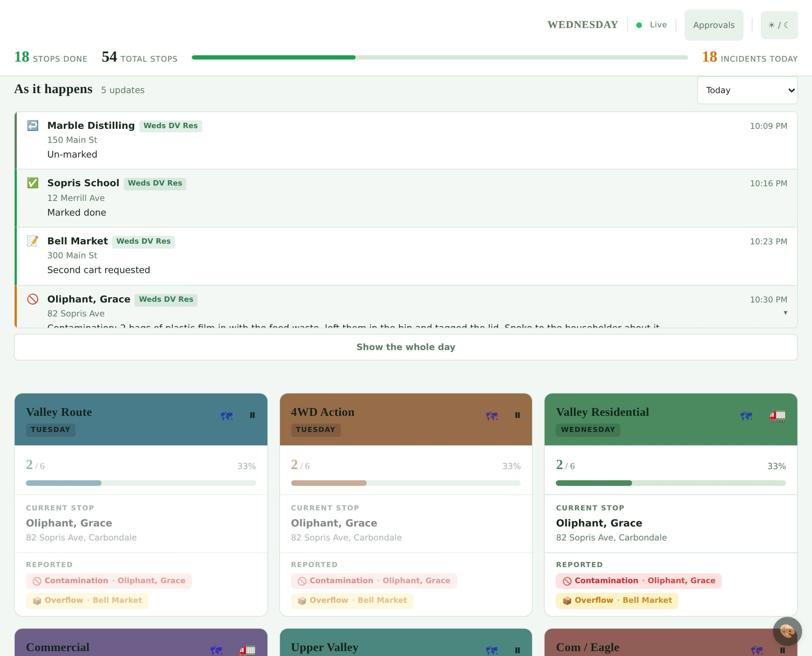

Application · Roaring Fork Valley, Colorado
Putting a hauler's routes on the drivers' phones
A compost and waste hauler ran its routes off a shared spreadsheet, printed each morning. I built a progressive web app that reads that same spreadsheet live, so drivers work from their phones and the office sees progress as it happens — without anybody learning a new system.
The first is a scripted movie of a driver's morning; the other two you drive yourself. All three run in your browser on invented data — no server, no route sheet, no sign-in, and no customer who exists.
- Role
- Sole designer and developer
- Built with
- Node, Express,
wsWebSockets, Google Sheets API, vanilla JS - Shape
- Installable PWA — no app store, no download
- Status
- In daily use on live routes
The driver's screen

Everything on this screen is sized for somebody standing at the back of a truck in winter. One column, one thumb, no menus to go hunting in, and the next stop always directly below the one just finished.
The seven report buttons replaced a free-text box. Drivers were already noting contamination and overflow; typing it on a phone, in the cold, meant it often did not get noted at all. A tap files the same thing, consistently enough that the office can count it.
Screenshots are from the demo data — no real customer appears in them.
The problem
The office kept every route in one Google Sheet — a tab per day, a row per stop, with addresses, driving directions and the notes that actually matter: the dog, the blocked bin, the gate you need a code for. Each morning it was printed and handed out.
That works until it doesn't. A paper route can't be reordered when a customer calls at 9am. A driver who finds a new gate code writes it on the sheet in the cab, where nobody else ever sees it. And the office has no idea how far along the truck is without ringing the driver — which means ringing a driver who is driving.
The obvious answer is a fleet management platform. The obvious answer was wrong: it meant a monthly licence, a migration away from the spreadsheet the office had spent years getting right, and retraining everybody. The spreadsheet wasn't the problem. Printing it was.
What I built instead
The sheet stays the system of record
The office keeps working exactly as before. The app reads the same tabs and writes back to the same cells, so there was no migration and nothing to re-learn. Delete the app and the business still runs.
Live both ways
A WebSocket connection means a stop marked done on a phone shows in the office within a second, and a route reordered in the sheet reaches the truck without the driver reloading anything.
Turn-by-turn, in the app
Navigation, satellite and Street View for the stop the driver is actually approaching — so they can see which side of the road the bin is on before they get there.
Notes and photos go home
Anything the driver notices — a gate code, a blocked bin, a customer request — lands back in the sheet the office already reads. Photos upload from the cab and the link goes in the row.
A phone in a cab, not a desktop app
Installs to the home screen, works one-handed, targets sized for gloves. Drivers get it by text message — a link, not an app store listing and a password reset.
A customer portal too
Customers request a hold or a pickup change themselves. Requests queue for approval rather than landing straight in the route, so the office stays in control.
What it grew into
The first version marked stops done. Most of what follows arrived after drivers had used it for a while and told me where it hurt — which is the only order I have ever seen produce software anybody keeps.
It keeps working with no signal
Dead zones are a fact about this valley, not an edge case. A failed write is never rolled back on screen — it parks in local storage and retries on reconnect, on refocus, and on a timer. Every queued write is the absolute state of a stop rather than a change to it, which is what makes a blind retry safe to repeat.
Behind a code
The route sheet holds customer names, addresses and gate codes. A shared access code now sits in front of every route and every file, taken from a one-time link and kept in a cookie — then stripped from the address bar, so it is not left behind in a screenshot.
Mapping that does not run up a bill
Map APIs charge per call, and the expensive ones are the ones inside something that repeats. Addresses are geocoded once, ever, and cached. Directions and traffic are throttled by both time elapsed and distance moved. The reroute watcher sleeps while the tab is hidden, so a phone left in a cab overnight costs nothing.
A customer portal, and a way to pay
Customers request a hold or an extra pickup themselves, and those requests queue for a human rather than landing in a route. Invoices are raised against QuickBooks, so payment links come from the books the business already keeps.
Test-drive it from a desk
A simulation mode drives the real driver screen with synthetic GPS walking a real route, and a fake network with an on and off switch — which is how the offline queue gets exercised without finding a dead zone. It wraps the actual pages rather than reimplementing them, so it cannot drift out of step with what drivers run. Writes never reach the sheet.
It reports its own failures
Drivers do not file bug reports; they work around things and say nothing. The app posts what breaks on its own, deduplicated so one fault firing every second is one line with a count — including the quiet kind, where nothing throws and a response simply came back wrong.
The office board
The driver's phone is only half of it. The other half is the screen the office watches: every route's progress at once, an activity feed that fills as the morning happens, and the approval queue where customer requests from the website wait for a human decision.
It is driven by a WebSocket, so a stop marked done in a truck appears here within a second — no refreshing, no ringing a driver who is driving. A banner appears if a route cannot be written back to the sheet, because silent failure is the one thing an operations screen must never do.
It plays a scripted morning — give it a moment and watch the feed move.

The part I am most pleased with
That spreadsheet has billing in it. Rates, account notes, customer movement — things a driver's phone has no business displaying, and that no app should be one bug away from leaking.
So the server holds an explicit allow-list of the only fields that may ever reach a driver's screen, and a list of tabs that are off limits entirely. Anything not named is dropped before the response is built.
ALLOWED_STOP_FIELDS is a whitelist, not a blacklist. If
somebody adds a Rate column to the sheet next year, the app
cannot show it — not because anyone remembered to hide it, but because
nothing is visible until it is named.
That is the whole approach in one file. Make the safe thing the default and the unsafe thing impossible, rather than trusting a future edit to be careful.
And it degrades
Drivers lose signal in this valley — that is a fact about the terrain, not an edge case. Work queues locally and syncs when service returns. The walkthrough on this site is the same idea taken further: it has no server behind it at all, so it still plays on bad hotel wifi in front of somebody, years from now, with nothing upstream alive.
Why it is here
This is what I mean when I say I build things to be handed over. No framework, no build step, no licence to lapse. Plain JavaScript, a documented server, and a data model that is a spreadsheet the client already owns and understands.
It is also local. Keeping compost out of a landfill in the Roaring Fork Valley is a small operation with real routes and real trucks, and the useful software for it was never going to arrive from a vendor in another state.